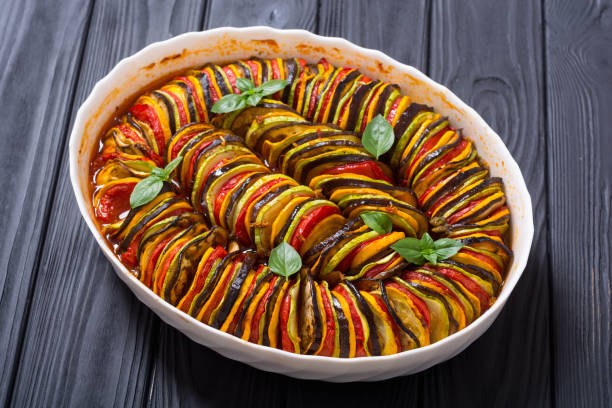

Ratatouille

Description
Ratatouille is a basic yet super tasty dish that has been popularized by the famous Disney movie.
Ingredients
- 2 eggplants
- 6 roma tomatoes
- 2 yellow squashes
- 2 zucchinis
Steps
- Preheat the oven for 375˚F (190˚C).
- Using a sharp knife or a mandoline, slice the eggplant, tomatoes, squash, and zucchini into approximately ¹⁄₁₆-inch (1-mm)-thick rounds, then set aside.
- Make the sauce: Heat the olive oil in a 12-inch (30-cm) oven-safe pan over medium-high heat. Sauté the onion, garlic, and bell peppers until soft, about 10 minutes. Season with salt and pepper, then add the crushed tomatoes. Stir until the ingredients are fully incorporated. Remove from heat, then add the basil. Stir once more, then smooth the surface of the sauce with a spatula.
- Arrange the veggies in alternating slices, (for example, eggplant, tomato, squash, zucchini) on top of the sauce, working from the outer edge to the center of the pan. Season with salt and pepper.
- Make the herb seasoning: In a small bowl, mix together the basil, garlic, parsley, thyme, salt, pepper, and olive oil. Spoon the herb seasoning over the vegetables.